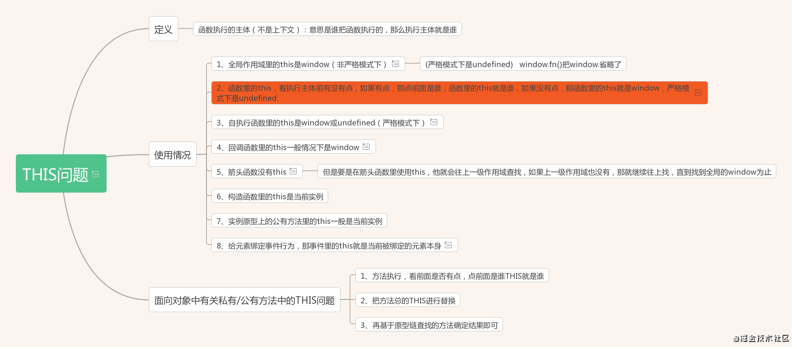

理解this 指向问题~
this
作用：提供了一种更优雅的方法来隐式’传递’一个对象的引用，因此可以将API设计得更加简洁并且易于复用。
词法作用域和动态作用域
- 词法作用域（静态作用域）：函数的作用域在函数定义的时候就决定了（ JavaScript ）
- 动态作用域：函数的作用域是在函数调用的时候才决定的
var value = 1;
function foo() {
console.log(value);
}
function bar() {
var value = 2;
foo();
}
bar();
// 结果是 ???
假设JavaScript采用静态作用域：
执行 foo 函数，先从 foo 函数内部查找是否有局部变量 value，如果没有，就根据书写的位置，查找上面一层的代码，也就是 value 等于 1，所以结果会打印 1。
假设JavaScript采用动态作用域：
执行 foo 函数，依然是从 foo 函数内部查找是否有局部变量 value。如果没有，就从调用函数的作用域，也就是 bar 函数内部查找 value 变量，所以结果会打印 2。
JavaScript采用的是静态作用域，所以结果是 1。bash 就是动态作用域
var scope = "global scope";
function checkscope(){
var scope = "local scope";
function f(){
return scope;
}
return f();
}
checkscope();
var scope = "global scope";
function checkscope(){
var scope = "local scope";
function f(){
return scope;
}
return f;
}
checkscope()();
两段代码都会打印：local scope。原因也很简单，因为JavaScript采用的是词法作用域，函数的作用域基于函数创建的位置。
官方解答：
JavaScript函数的执行用到了作用域链，这个作用域链是在函数定义的时候创建的。嵌套的函数f()定义在这个作用域链里，其中的变量scope一定是局部变量，不管何时何地执行函数f()，这种绑定在执行f()时依然有效。
执行上下文栈(ECStack)
JavaScript 的可执行代码(executable code)的类型：
- 全局代码
- 函数代码
-
eval代码
JavaScript 引擎创建了执行上下文栈（Execution context stack，ECS）来管理执行上下文，为了模拟执行上下文栈的行为。
function fun3() {
console.log('fun3')
}
function fun2() {
fun3();
}
function fun1() {
fun2();
}
fun1();
当执行一个函数的时候，就会创建一个执行上下文，并且压入执行上下文栈，当函数执行完毕的时候，就会将函数的执行上下文从栈中弹出。
上面这段代码处理：
// 伪代码
// fun1()
ECStack.push(<fun1> functionContext);
ECStack.push(<fun2> functionContext);
// fun2还调用了fun3
ECStack.push(<fun3> functionContext);
// fun3执行完毕
ECStack.pop();
// fun2执行完毕
ECStack.pop();
// fun1执行完毕
ECStack.pop();
// javascript接着执行下面的代码，但是ECStack底层永远有个globalContext
上面的《JavaScript权威指南》中的两个例子，上下文栈:
ECStack.push(<checkscope> functionContext);
ECStack.push(<f> functionContext);
ECStack.pop();
ECStack.pop();
ECStack.push(<checkscope> functionContext);
ECStack.pop();
ECStack.push(<f> functionContext);
ECStack.pop();
进入执行上下文
上下⽂的⽣命周期包括三个阶段：创建阶段 -> 执⾏阶段 -> 回收阶段。
当进入执行上下文时，这时候还没有执行代码，变量对象会包括：
- 函数的所有形参 (如果是函数上下文)
- 由名称和对应值组成的一个变量对象的属性被创建
- 没有实参，属性值设为 undefined
- 函数声明
- 由名称和对应值（函数对象(function-object)）组成一个变量对象的属性被创建
- 如果变量对象已经存在相同名称的属性，则完全替换这个属性
- 变量声明
- 由名称和对应值（undefined）组成一个变量对象的属性被创建；
- 如果变量名称跟已经声明的形式参数或函数相同，则变量声明不会干扰已经存在的这类属性
作用域链
查找变量的时候，会先从当前上下文的变量对象中查找，如果没有找到，就会从父级(词法层面上的父级)执行上下文的变量对象中查找，一直找到全局上下文的变量对象，也就是全局对象。
这样由多个执行上下文的变量对象构成的链表就叫做作用域链。
this原理

this 的四种绑定规则
默认绑定
规则：在非严格模式下，默认绑定的this指向全局对象，严格模式下this指向undefined
function foo() {
console.log(this.a); // this指向全局对象
}
var a = 2;
foo(); // 2
function foo2() {
"use strict"; // 严格模式this绑定到undefined
console.log(this.a);
}
foo2(); // TypeError:a undefined
function foo() {
console.log(this.a); // foo函数不是严格模式 默认绑定全局对象
}
var a = 2;
function foo2(){
"use strict";
foo(); // 严格模式下调用其他函数，不影响默认绑定
}
foo2(); // 2
对于默认绑定来说，决定this绑定对象的是函数体是否处于严格模式，严格指向undefined，非严格指向全局对象。
隐式绑定
规则：函数在调用位置，是否有上下文对象，如果有，那么this就会隐式绑定到这个对象上。
function foo() {
console.log(this.a);
}
var a = "Oops, global";
let obj2 = {
a: 2,
foo: foo
};
let obj1 = {
a: 22,
obj2: obj2
};
obj2.foo(); // 2 this指向调用函数的对象
obj1.obj2.foo(); // 2 this指向最后一层调用函数的对象
// 隐式绑定丢失
let bar = obj2.foo; // bar只是一个函数别名 是obj2.foo的一个引用
bar(); // "Oops, global" - 指向全局
隐式绑定丢失的问题：实际上就是函数调用时，并没有上下文对象，只是对函数的引用，所以会导致隐式绑定丢失。
传入回调函数中，这种情况更加常见，并且隐蔽:
test(obj2.foo); // 传入函数的引用，调用时也是没有上下文对象。
显式绑定
隐式绑定会丢失，我们可以在某个对象上强制调用函数，从而将this绑定在这个对象上。
规则：我们可以通过apply、call、bind将函数中的this绑定到指定对象上。
function foo() {
console.log(this.a);
}
let obj = {
a: 2
};
foo.call(obj); // 2
如果你传入了一个原始值(字符串,布尔类型，数字类型)，来当做this的绑定对象，这个原始值转换成它的对象形式。
如果你把null或者undefined作为this的绑定对象传入call/apply/bind，这些值会在调用时被忽略，实际应用的是默认绑定规则。
new绑定
new的时候会做哪些事情：
- 创建一个全新的对象。
- 这个新对象会被执行
[[Prototype]]连接。 - 这个新对象会绑定到函数调用的
this。 - 如果函数没有返回其他对象，那么
new表达式中的函数调用会自动返回这个新对象。
规则：使用构造调用的时候，this会自动绑定在new期间创建的对象上。
function foo(a) {
this.a = a; // this绑定到bar上
}
let bar = new foo(2);
console.log(bar.a); // 2
this 四种绑定规则的优先级
obj.foo.call(obj2); // this指向obj2 显式绑定比隐式绑定优先级高。
new obj.foo(); // thsi指向new新创建的对象 new绑定比隐式绑定优先级高。
箭头函数的 this（不会使用上述的四条规则）
箭头函数的this规则
- 箭头函数中的
this继承于它外面第一个不是箭头函数的函数的this指向。 - 箭头函数的
this一旦绑定了上下文，就不会被任何代码改变。
function foo() {
return () => {
console.log(this.a);
};
}
let obj1 = {
a: 2
};
let obj2 = {
a: 22
};
let bar = foo.call(obj1); // foo this指向obj1
bar.call(obj2); // 输出2 这里执行箭头函数 并试图绑定this指向到obj2
总结
| 调用方式 | this指向 |
|---|---|
| 普通函数调用 | window |
| 构造函数调用 | 实例对象 原型对象里面的方法也指向实例对象 |
| 对象方法调用 | 该方法所属对象 |
| 事件绑定方法 | 绑定事件对象 |
| 定时器函数 | window |
| 立即执行函数 | window |